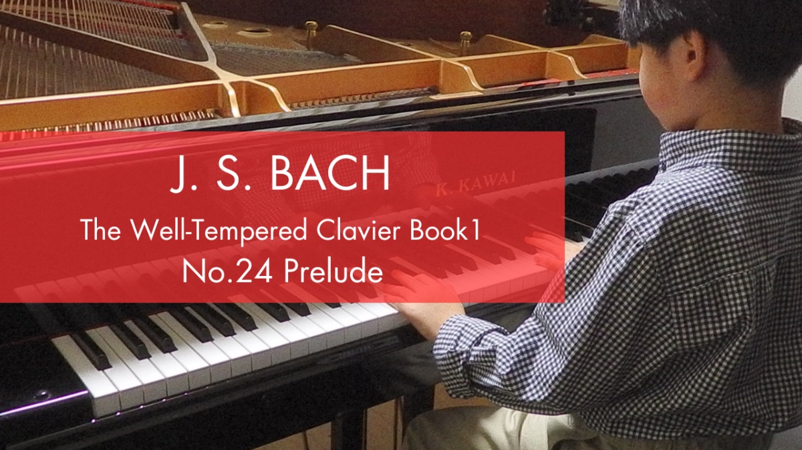

Performance and Interpretation
-  October 28, 2025 Performance Record of J.S. Bach – WTC I No. 24 Prelude in B Minor, BWV 869 Recorded at age 9, this interpretation focuses on precise blending of overtones and subharmonics across the wide register (C♯2–C6), with attention to “playing the rest,” seconds that feel “undissonant,” and identity shifts at mm. 15 & 46.
-
 July 21, 2025
Performance Record of J.S. Bach – Gottes Zeit ist die allerbeste Zeit, BWV 106 (Self-arranged Piano Solo)
This is a performance record of J.S. Bach’s “Gottes Zeit ist die allerbeste Zeit” (Sonatina from BWV 106), arranged as a piano solo and recorded in June 2025 by Reiji at age 9. The arrangement is based on the 1768 manuscript...
July 21, 2025
Performance Record of J.S. Bach – Gottes Zeit ist die allerbeste Zeit, BWV 106 (Self-arranged Piano Solo)
This is a performance record of J.S. Bach’s “Gottes Zeit ist die allerbeste Zeit” (Sonatina from BWV 106), arranged as a piano solo and recorded in June 2025 by Reiji at age 9. The arrangement is based on the 1768 manuscript...
- July 21, 2025 Performance Record of J.S. Bach – WTC I No. 13 Fugue in F-Sharp Major, BWV 858 A performance record of J.S. Bach’s Fugue in F-Sharp Major (BWV 858), recorded in March 2025 by Reiji at age 9. This performance captures Reiji’s interpretation of the piece as a scene of “angels dancing in heaven,” contrasting with...
- July 21, 2025 Performance Record of J.S. Bach – WTC I No. 13 Prelude in F-Sharp Major, BWV 858 A performance record of J.S. Bach’s Prelude in F-Sharp Major (BWV 858), recorded in January 2025 by Reiji at age 8. In this performance, Reiji pays particular attention to overtone resonance, especially in the ranges between the...
- July 21, 2025 Performance Record of J.S. Bach – Invention No. 15 in B Minor, BWV 786 A performance record of J.S. Bach’s Invention No. 15 in B Minor (BWV 786), recorded in February 2025 by Reiji at age 9. Reiji explores the surprising chord progressions that link the tonic to dominant and relative major keys in...
- July 21, 2025 Performance Record of J.S. Bach – Invention No. 14 in B-flat Major, BWV 785 A performance record of J.S. Bach’s Invention No. 14 in B-flat Major (BWV 785), recorded in March 2025 by Reiji at age 9. In this interpretation, Reiji explores how to unify the piece through careful overtone blending, pedal use, and...
- July 21, 2025 Performance Record of J.S. Bach – Invention No. 13 in A Minor, BWV 784 A performance record of J.S. Bach’s Invention No. 13 in A Minor (BWV 784), recorded in January 2025 by Reiji at age 8. This interpretation focuses on the expressive use of diminished seventh chords, which add a uniquely dark and...
- July 21, 2025 Performance Record of J.S. Bach – Invention No. 12 in A Major, BWV 783 A performance record of Bach's Invention No. 12 (BWV 783), recorded in May 2025 by Reiji at age 9. This performance focuses on harmonic clarity using subtle pedal control and pitch sensitivity, with special attention to overtone balance and...
- July 21, 2025 Performance Record of J.S. Bach – Invention No. 11 in G Minor, BWV 782 A performance record of Bach's Invention No. 11 (BWV 782), interpreted and recorded by Reiji at age 9. This piece presents a unique harmonic ambiguity and spatial distortion, which Reiji explores through overtone balancing and chordal...
- July 21, 2025 Performance Record of J.S. Bach – Invention No. 10 in G Major, BWV 781 A performance record of Bach's Invention No. 10 (BWV 781), recorded in February 2025 by Reiji at age 8. This document includes the performer's unique insights into harmonic consistency and overtone resonance, revealing a structural clarity...
- July 21, 2025 Performance Record of J.S. Bach – Invention No. 9 in F Minor, BWV 780 A performance record of Bach's Invention No. 9 (BWV 780), recorded in June 2025 by Reiji at age 9. In this rendition, Reiji offers a nuanced interpretation of harmonic rhythm, structural modulation, and overtone mapping—identifying...
- July 21, 2025 Performance Record of J.S. Bach – Invention No. 8 in F Major, BWV 779 A performance record of Bach's Invention No. 8 (BWV 779), recorded in January 2025 by Reiji at age 8. This entry highlights his structural attention to micro-divisions and atmospheric variations across...
- July 21, 2025 Performance Record of J.S. Bach – Invention No. 7 in E Minor, BWV 778 This performance of Invention No. 7 (BWV 778) by J.S. Bach was recorded in February 2025 by Reiji at age 8. The piece features distinct harmonic expansions and dominant suspensions, and this interpretation seeks to bring out...
- July 21, 2025 Performance Record of J.S. Bach – Invention No. 6 in E Major, BWV 777 This performance of Invention No. 6 by J.S. Bach was recorded in July 2025 by Reiji at age 9. The interpretation features a structural approach to the repeats, including harmonic variation and overtone manipulation. The performance...
- July 21, 2025 Performance Record of J.S. Bach – Invention No. 5 in E-Flat Major, BWV 776 This performance of Invention No. 5 in E-flat Major (BWV 776) by 9-year-old Reiji highlights his musical interpretation that embraces the piece's colorful modulations and overtone-aligned leaps. Recorded in July 2025, the performance...
- May 6, 2025 Performance Record of J.S. Bach – Invention No. 4 in D Minor, BWV 775 A performance record of Bach's Invention No. 4 in D minor (BWV 775), shared as part of Reiji's ongoing project to document and analyze all of Bach’s Inventions. This recording highlights Reiji’s early insights into underlying harmonic...
- September 23, 2025 Performance Record of J.S. Bach – Invention No. 3 in D Major, BWV 774 A performance record of Bach’s Invention No. 3 (BWV 774), recorded in September 2025 by Reiji at age 9. This interpretation highlights similarities with Invention No. 4, focusing on cadences, trills, and overtone vs. subharmonic resonance...
- October 5, 2025 Performance Record of J.S. Bach – Invention No. 2 in C Minor, BWV 773 A performance record of J.S. Bach’s Invention No. 2 in C Minor (BWV 773), recorded in October 2025 by Reiji at age 9. This interpretation focuses on the 11th harmonic’s minimal interference and the natural alignment of its rational multiples, producing a balanced structure of overtone and subharmonic resonance throughout the piece.
- May 6, 2025 Performance Record of J.S. Bach – Invention No. 1 in C Major, BWV 772 A performance record of Bach's Invention No. 1 (BWV 772), recorded in January 2025 by Reiji at age 8. This document includes Reiji’s own structural and harmonic observations, offering sharp insights into the modulations and acoustic...